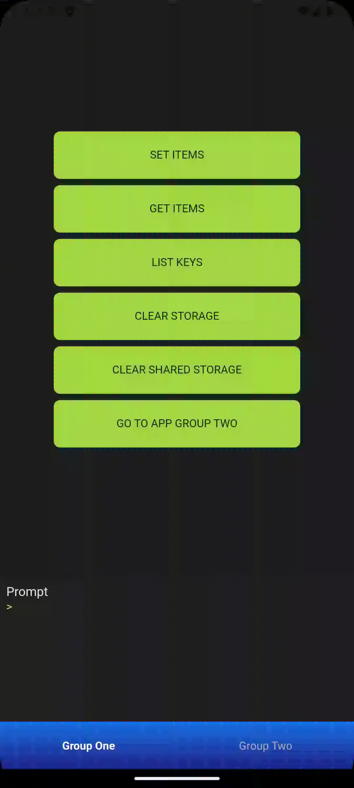

Release - 24/02/2025
Sobre a release
A release do dia 24/02/2025 atualiza a Eitri Machine no Android para o targetSdk 34, que equivale à versão 14 do SO. Com isso, a machine terá compatibilidade a novos recursos do Android! Uma série de novas funcionalidades também foram disponibilizadas ao desenvolvedor, como listagem e remoção de notificações agendadas, suporte para chamadas à telas e serviços nativos ao executar um eitri-app, funções de reload de um eitri-app e simulação de bottom bar no Eitri Play para desenvolvimento de múlitplos workspaces. Uma série de correções também foi feita para melhorar a qualidade dos eitri-apps, como a eliminação de um memory leak no uso da bottom bar e a correção de modal de confirmação no Eitri Doctor.
Eitri Machine v.3.3.0
Novas features
Suporte para chamadas de serviços e componentes na execução de um Eitri-App
No Android, agora o modelo RunInput tem a propriedade intentFlags: Int?, permitindo que se chame uma tela ou serviço nativo ao executar um eitri-app
Listagem e cancelamento de notificações agendadas
Agora é possível listar e remover as notificações que foram agendadas por async Eitri.notification.sendLocalPush(). Isso é feito através de dois novos métodos, async Eitri.notification.listLocalPushes(): Promise<NotificationSchedules> e async Eitri.notification.cancelLocalPush(): Promise<void>.
Um exemplo de utilização de listLocalPushes é como tal:
let localPushes = await Eitri.notification.listLocalPushes();
console.log(localPushes);
/* Example output from this console.log:
{
schedules: [
{ nextOccurrence: "Feb 14, 2025 4:07:58 PM", notification: {...} },
{ nextOccurrence: "Feb 15, 2025 10:00:00 AM", notification: {...} }
]
}
*/
Já cancelLocalPush é usado da seguinte forma:
Reload de eitri-app
Foi adicionada a funcionalidade de recarregar um eitri-app, acessada através do método async Eitri.navigation.reload(): Promise<void>.
Simulação de bottom bar
O Eitri Play agora pode simular bottom bars para ajudar no desenvolvimento com múltiplos workspaces.

Correções
Memory Leak nas bottom bars
Foi corrigido um memory leak que afetava as views de bottom bar no Android.
Bottom bar para de funcionar após longo tempo em execução
Foi corrigido um erro presente apenas no iOS que fazia com que a bottom bar deixasse de abrir e fechar após um longo tempo de execução do eitri-app devido à problemas com gerenciamento da RAM.
Corrige lógica de modal de confirmação do Eitri Doctor
Corrige lógica do componente PrompModal.jsx no Eitri Doctor para que ele passe a abrir.
Eitri Play
Atualizações
Nova versão do Eitri Play passa a vir com a Eitri Machine atualizada para a versão 3.3.0.
Luminus v.X.X.X
Novas features
Carregamento "on demand" de imagens que usam lazy loading
As tags <ImageView> e <Image> agora possuem um atributo loading, que aceita um valor ondemand que força o carregamento da imagem.
Por exemplo:
[1, 2, 3, 4, 5].map((index) => (
<ImageView
loading="ondemand"
width="20%"
aspectRatio="1:1"
key={"image_${index}"}
src={"http://lorempixel.com.br/800/800/?${index}"}
borderRadius="pill"
borderWidth="hairline"
/>
))